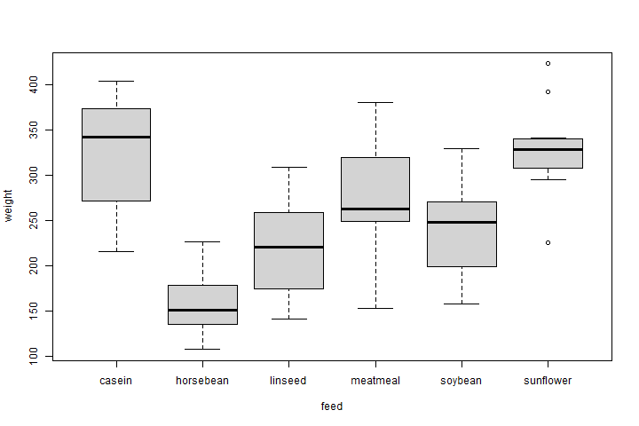

[13장] R 코드와 출력의 해석
빅데이터개론
13장
R 코드와 출력의 해석
2027학년도 「빅데이터개론」의 준비 중인 교재입니다. 편집 상태를 검토하기 위해 미리 공개한 것으로, 수업 전에 내용과 순서가 바뀔 수 있습니다.
학사 15주차 · 교재 13 · 4부 R 정리 · ADsP 3과목 데이터분석 (R 코드와 R 출력이 나오는 문항)
4장부터 12장까지는 장의 끝 「R 출력 해석」 절에서 같은 분석의 R 출력을 읽었다. 이 장은 그 출력을 유형별로 다시 묶어, 앞 장에서 배운 값이 출력의 어느 자리에 있는지를 정리한다. 새로운 통계 내용은 없다.
ADsP 시험은 R 코드를 쓰게 하지 않고 코드나 출력의 뜻을 묻는다. 자주 나오는 회귀 분석, 기술 통계, 주성분 분석의 순서로 절을 놓았고, 자료는 앞 장에서 쓰지 않은 R의 내장 자료로 바꾸었다.
학습 목표
- R 코드에서 파이썬과 다르게 읽히는 곳(인덱스,
<-, 팩터,NA,$)의 실행 결과를 말한다. - 데이터 마트 패키지
reshape,sqldf,plyr,data.table의 역할을 구분한다. - 회귀 분석, 기술 통계와 검정, 주성분 분석, 분류와 군집의 R 출력에서 문항이 묻는 값의 자리를 찾아 해석한다.
- 출력 하나에 질문 여럿이 붙은 문항 묶음을 정해진 순서로 풀고, 답의 근거가 된 출력의 자리를 적는다.
수업의 흐름
- 시작하기(0절). 12장을 되짚고 출력을 읽는 공통 순서를 적는다.
- R 코드와 데이터 마트 패키지(1~2절).
- 출력 해석(3~7절). 유형마다 출력을 읽고 따라 하기의 표를 채운 뒤 읽기 연습을 한다.
- 중심 실습(8절). 세트 13의 20문항을 36분에 풀고 답의 근거가 된 출력의 자리를 적는다.
- 연습 문제와 기말시험 안내(10~11절).
준비 사항
| 항목 | 내용 |
|---|---|
| 실습 노트북 | 없다. 따라 하기는 출력을 읽고 표를 채우는 활동이다 |
| 자료 | R에 들어 있는 내장 자료다. 출력만 읽으므로 파일을 받지 않는다 |
| 앞 장과의 연계 | 4~12장의 「R 출력 해석」 절과 부록 B(파이썬과 R의 대응표)를 전제로 한다 |
| 실습 환경 | R을 설치하지 않는다. 이 장의 출력은 R 4.6.2에서 실제로 실행하여 얻은 것이다 |
자료는 절마다 처음에 소개한다.
[최신 자료 자리: 출력을 만든 R의 판] 이 장의 출력은 R 4.6.2(기본 패키지와
MASS,rpart)로 얻었다(2026-11-16). R의 판이 바뀌면 출력의 줄 바꿈이나 자릿수가 조금 달라질 수 있으나 읽는 자리는 같다. 수업 전에 https://cran.r-project.org/에서 최신 판을 확인한다.
0. 시작하기
0.1 지난 장 되짚기
12장 「군집 분석과 연관 분석」의 핵심은 셋이다.
- 거리는 단위에 끌려가므로 표준화한 뒤 잰다.
- 덴드로그램은 가로선을 그어 군집 수를 읽는다.
- 연관 규칙은 지지도로 거르고 신뢰도와 향상도로 고른다.
이 장은 12장 6절에서 출력을 읽은 방법을 다른 출력으로 넓힌다.
0.2 자료와 답안표 펴기
8절의 답안표를 공책에 옮기고 그 위에 다음 순서를 적는다. 3~7절의 출력과 세트 13을 모두 이 순서로 읽는다.
출력을 읽는 공통 순서
- 무슨 함수의 출력인가.
Call, 첫 줄의 제목, 표의 머리를 본다. - 무엇을 무엇으로 설명하는가. 식의 물결표 왼쪽(종속 변수)과 오른쪽(독립 변수나 집단), 관측값의 수를 적는다. 관측값의 수는 출력에 없으면 자유도로 계산한다.
- 판정의 줄은 어디인가. 모형 전체의 판정(마지막 줄의
p-value,Pr(>F))과 항목별 판정(계수의Pr(>|t|),Pr(>|z|))을 구별한다. - 크기와 방향은 어디인가. 계수의 부호와 크기, 평균의 차, 기여율, 오즈비를 읽는다.
- 문항의 낱말을 출력의 낱말로 바꾼다. “설명력”은
Multiple R-squared, “누적 기여율”은Cumulative Proportion이다.
- 확인 1 답안표 위에 공통 순서 다섯 단계를 적고, 12장 6.4절의
kmeans()출력에서 군집이 잘 나뉜 정도를between_SS / total_SS의 71.2%로 읽었다.
1. R 코드 독해를 위한 최소 문법
배경과 쓰임. R은 통계 계산과 그래픽을 위한 자유 소프트웨어이며, 기본 배포판에 통계 함수(lm(), t.test(), prcomp() 등)와 예제 자료가 들어 있다(R Project, An Introduction to R). 분석 보고서와 학술 논문의 부록에 R의 코드와 출력이 그대로 실리는 일이 많다.
이 절은 파이썬과 다르게 읽히는 곳만 다룬다. 출력에서 >로 시작하는 줄은 입력한 코드이고, 결과 앞의 [1]은 그 줄의 첫 값이 몇 번째 값인지를 알리는 표시이며 값이 아니다.
1.1 대입과 벡터
> x <- c(10, 20, 30, 40, 50)
> x
[1] 10 20 30 40 50
> length(x)
[1] 5
> 1:5
[1] 1 2 3 4 5
> seq(1, 10, by = 3)
[1] 1 4 7 10<-는 대입이다(파이썬의=).c()는 같은 자료형의 값을 묶어 벡터를 만든다.1:5는 끝의 5를 포함한다. 파이썬의range(1, 5)와 다르다.
1.2 1부터 세는 인덱스
> x[1]
[1] 10
> x[2:4]
[1] 20 30 40
> x[-1]
[1] 20 30 40 50
> x[0]
numeric(0)
> x[6]
[1] NA
> x > 25
[1] FALSE FALSE TRUE TRUE TRUE
> x[x > 25]
[1] 30 40 50R의 인덱스는 1부터 센다. x[0]은 빈 벡터를 내고, x[x > 25]는 조건이 TRUE인 자리의 값만 고른다.
| 하는 일 | R | 파이썬 |
|---|---|---|
| 대입 | x <- 3 |
x = 3 |
| 첫째 원소 | x[1] |
x[0] |
| 둘째부터 넷째까지 | x[2:4] (끝을 포함한다) |
x[1:4] (끝을 포함하지 않는다) |
| 음수 인덱스 | x[-1]은 첫째 원소를 뺀 나머지 |
x[-1]은 마지막 원소 |
| 범위를 넘는 인덱스 | x[6]은 NA |
IndexError |
1.3 자료형과 팩터
| 자료형 | 뜻 | 만드는 함수 | 파이썬에서 가까운 것 |
|---|---|---|---|
| 벡터 | 같은 자료형의 값을 한 줄로 늘어놓은 것 | c() |
Series |
| 팩터 | 범주형 자료. 범주를 수준(Levels)으로 가진다 |
factor() |
category 자료형 |
| 행렬 | 같은 자료형의 값을 행과 열로 놓은 것 | matrix() |
2차원 배열 |
| 리스트 | 자료형과 길이가 다른 값을 이름을 붙여 담은 것 | list() |
딕셔너리 |
| 데이터 프레임 | 열마다 자료형이 다를 수 있는 표 | data.frame() |
DataFrame |
> c(1, "a", TRUE)
[1] "1" "a" "TRUE"
> f <- factor(c("low", "high", "mid", "low", "high"))
> f
[1] low high mid low high
Levels: high low mid
> levels(f)
[1] "high" "low" "mid"
> as.integer(f)
[1] 2 1 3 2 1
> table(f)
f
high low mid
2 2 1 - 벡터에 수와 문자를 섞으면 모두 문자로 바뀐다.
- 팩터는 수준의 목록과 각 값이 몇 번째 수준인지를 저장한다. 수준은 따로 정하지 않으면 글자 순서이므로
as.integer(f)는2 1 3 2 1이다.table()은 수준별 개수를 센다.
1.4 결측값 NA
> df <- data.frame(id = 1:4, score = c(90, NA, 70, 80))
> str(df)
'data.frame': 4 obs. of 2 variables:
$ id : int 1 2 3 4
$ score: num 90 NA 70 80
> y <- df$score
> is.na(y)
[1] FALSE TRUE FALSE FALSE
> sum(is.na(y))
[1] 1
> mean(y)
[1] NA
> mean(y, na.rm = TRUE)
[1] 80TRUE는 1로 계산되므로sum(is.na(y))는 결측값의 수다.- 결측값이 있으면
mean(),sum(),sd()의 결과는NA다. pandas와 반대이며,na.rm = TRUE를 주어야 결측값을 빼고 계산한다. str()의4 obs. of 2 variables는 4행 2열이다.int는 정수,num은 실수,Factor는 팩터다.
1.5 $와 [행, 열]
> lst <- list(name = "A", score = c(90, 85))
> lst$score
[1] 90 85
> df[2, ]
id score
2 2 NA
> df[df$id >= 3, ]
id score
3 3 70
4 4 80
> m <- matrix(1:6, nrow = 2)
> m
[,1] [,2] [,3]
[1,] 1 3 5
[2,] 2 4 6
> m[2, 3]
[1] 6$는 이름으로 하나를 고른다.df$score는 파이썬의df["score"]다. 모형의 결과에서 값을 꺼낼 때에도 쓴다(km$size).[행, 열]에서 쉼표의 앞이 행, 뒤가 열이고 비우면 전부다.matrix(1:6, nrow = 2)는 값을 열 방향으로 채운다.
1.6 함수 호출과 식
m <- lm(weight ~ height, data = women) # 회귀 모형을 적합하여 m에 넣는다
summary(m) # m의 결과표를 낸다
round(cor(x), 3) # 안쪽 cor(x)를 먼저 실행하고, 그 결과를 소수 셋째 자리로 반올림한다data = women처럼이름 = 값으로 적은 인수는 파이썬의 키워드 인자와 같다.weight ~ height는 식이다. 물결표의 왼쪽이 종속 변수(반응 변수), 오른쪽이 독립 변수(설명 변수)다.y ~ .은 나머지 열을 모두 독립 변수로 쓴다. 오른쪽이 팩터이면 집단을 나누는 변수다.- 함수가 겹쳐 있으면 안쪽부터 읽는다. 앞 장에서 쓴 R 함수는 장별로 부록 B에 모여 있다.
따라 하기
1.1~1.5절의 출력을 보고 표를 채운다. 「파이썬이면」 칸에는 리스트 x = [10, 20, 30, 40, 50]에서의 결과를 적는다.
| 코드 | R의 결과 | 파이썬이면 |
|---|---|---|
x[1] |
||
x[2:4] |
||
x[-1] |
||
x[6] |
||
as.integer(f) |
(없음) | |
mean(y) |
(pandas는 결측값을 빼고 계산한다) |
- 확인 2 R의 결과를
10,20 30 40,20 30 40 50,NA,2 1 3 2 1,NA로, 파이썬의 결과를 20,[30, 40], 50으로 채웠다.
2. 데이터 마트 패키지의 이름과 역할
배경과 쓰임. 4장 「표 데이터와 데이터 마트」에서 pandas로 한 일을 R에서는 다음 패키지로 한다. 시험은 패키지의 이름과 역할을 짝짓게 한다. 이 교재를 쓴 환경에 패키지가 없어 출력은 싣지 않는다.
| 패키지 | 역할 | 대표 함수 | pandas에서 같은 일 |
|---|---|---|---|
reshape |
표의 모양을 바꾼다. 넓은 표를 긴 표로 녹이고(melt), 원하는 모양으로 다시 짠다(cast) |
melt(), cast() |
melt(), pivot_table() |
sqldf |
데이터 프레임에 SQL 문을 그대로 쓴다 | sqldf("select ... from df") |
없다 |
plyr |
자료를 나누고(split), 함수를 적용하고(apply), 결과를 합친다(combine) | ddply(), ldply() |
groupby() 뒤의 집계 |
data.table |
키(key)를 정해 두고 빠르게 찾고 묶는 표 | data.table(), setkey() |
인덱스를 정한 DataFrame |
plyr의 함수 이름은 앞의 두 글자가 입력과 출력의 자료형이다(d 데이터 프레임, l 리스트, a 배열). ddply()는 데이터 프레임을 받아 데이터 프레임을 낸다.
따라 하기
다음 네 작업에 알맞은 패키지를 하나씩 적는다.
| 작업 | 패키지 |
|---|---|
(가) select 지역, avg(금액) from 고객 group by 지역을 그대로 실행한다 |
|
| (나) 월별 매출이 열로 늘어선 넓은 표를 긴 표로 바꾼다 | |
| (다) 1억 행의 표에서 고객 번호를 키로 정해 빠르게 찾는다 | |
| (라) 지역별로 나누어 평균을 구한 뒤 데이터 프레임으로 합친다 |
- 확인 3 네 작업에
sqldf,reshape,data.table,plyr을 짝짓고,ddply()의 앞 두 글자의 뜻을 적었다.
2.1 코드 읽기 연습
시험은 코드 한 줄을 보여 주고 하는 일을 묻기도 한다. 다음 다섯 줄은 지역(region), 월(month), 금액(amount)의 열을 가진 거래 표 sales를 다룬다.
m <- melt(sales, id = c("region", "month")) # reshape: id 열을 남기고 나머지 열을 variable, value의 두 열로 녹인다
cast(m, region ~ variable, mean) # reshape: 지역마다 한 행, 녹인 변수마다 한 열의 평균표로 다시 짠다
sqldf("select region, sum(amount) from sales group by region") # sqldf: SQL로 지역별 금액의 합을 구한다
ddply(sales, .(region), summarise, total = sum(amount)) # plyr: 지역별로 나누어 합을 구하고 데이터 프레임으로 합친다
dt <- data.table(sales); dt[, sum(amount), by = region] # data.table: [행, 열, by]의 꼴로 지역별 합을 구한다셋째부터 다섯째 줄은 모두 region으로 묶어 지역별 금액의 합을 낸다. 첫째 줄 melt()의 결과는 행이 늘어난 긴 표다.
3. 출력 해석: 회귀 분석
배경과 쓰임. 회귀 결과표는 통계 소프트웨어마다 꼴이 조금씩 다르지만 담긴 값(계수, 표준 오차, t 값, 유의 확률, 결정 계수, F 통계량)은 같다(R 매뉴얼 summary.lm). 출력 해석 문항이 가장 꾸준히 나오는 유형이며, 7장 「상관 분석과 회귀 분석」의 「R 출력 해석」과 같은 꼴이다.
3.1 단순 회귀: summary(lm())
간헐천의 분출 272회를 기록한 faithful에서 분출 사이의 대기 시간(waiting, 분)으로 분출이 이어진 시간(eruptions, 분)을 설명하는 모형이다.
Call:
lm(formula = eruptions ~ waiting, data = faithful)
Residuals:
Min 1Q Median 3Q Max
-1.29917 -0.37689 0.03508 0.34909 1.19329
Coefficients:
Estimate Std. Error t value Pr(>|t|)
(Intercept) -1.874016 0.160143 -11.70 <2e-16 ***
waiting 0.075628 0.002219 34.09 <2e-16 ***
---
Signif. codes: 0 '***' 0.001 '**' 0.01 '*' 0.05 '.' 0.1 ' ' 1
Residual standard error: 0.4965 on 270 degrees of freedom
Multiple R-squared: 0.8115, Adjusted R-squared: 0.8108
F-statistic: 1162 on 1 and 270 DF, p-value: < 2.2e-16[그림 자리:
summary(lm())출력의 읽는 순서] 3.1절의 출력 전체를 그대로 놓고, 읽는 순서대로 번호를 붙인 상자 넷을 겹친 주석 도식. ①Call의 식, ② 마지막 줄의p-value(모형의 유의성), ③Coefficients의Pr(>|t|)열(계수의 유의성), ④Multiple R-squared(설명력). 상자의 글자는 영문 또는 번호만 쓴다. 만들 곳: 출력을 텍스트로 붙인 도식 편집기.
읽는 순서: Call의 식, 마지막 줄의 p-value(모형의 유의성), Coefficients의 Pr(>|t|) 열(계수의 유의 확률, p-value), Multiple R-squared(설명력)의 순서로 읽는다. < 2.2e-16은 2.2 × 10의 -16제곱보다 작다는 표기다.
| 묻는 것 | 읽는 자리 | 이 출력의 값 |
|---|---|---|
| 회귀식 | Estimate 열. (Intercept)가 절편이다 |
eruptions = -1.874016 + 0.075628 × waiting |
| 기울기의 뜻 | 독립 변수 줄의 Estimate |
대기 시간이 1분 길면 분출 시간이 평균 0.075628분 길다 |
| t 값 | Estimate ÷ Std. Error |
0.075628 ÷ 0.002219 ≈ 34.1 |
| 계수가 유의한가 | Pr(>|t|) 열과 별표 |
<2e-16, ***. 유의하다 |
| 모형이 유의한가 | 마지막 줄의 p-value |
< 2.2e-16. 유의하다 |
| 설명력 | Multiple R-squared |
0.8115 |
| 관측값의 수 | 잔차의 자유도 + 계수의 수 | 270 + 2 = 272 |
| 예측값 | 회귀식에 값을 넣는다 | 대기 시간이 80분이면 -1.874016 + 0.075628 × 80 ≈ 4.18 |
독립 변수가 하나일 때에만 결정 계수는 상관 계수의 제곱(상관 계수는 √0.8115 ≈ 0.90)이고, F 통계량은 기울기의 t 값의 제곱(34.09² ≈ 1162)이다. (Intercept) 줄의 유의 확률은 절편이 0인지를 검정한 값이며, 모형 전체의 유의 확률은 마지막 줄에 있다.
3.2 다중 회귀: summary(lm())
화학 공장의 21일 운전 기록 stackloss에서 암모니아 손실(stack.loss)을 공기 유량, 냉각수 온도, 산 농도로 설명하는 모형이다.
Call:
lm(formula = stack.loss ~ Air.Flow + Water.Temp + Acid.Conc.,
data = stackloss)
Residuals:
Min 1Q Median 3Q Max
-7.2377 -1.7117 -0.4551 2.3614 5.6978
Coefficients:
Estimate Std. Error t value Pr(>|t|)
(Intercept) -39.9197 11.8960 -3.356 0.00375 **
Air.Flow 0.7156 0.1349 5.307 5.8e-05 ***
Water.Temp 1.2953 0.3680 3.520 0.00263 **
Acid.Conc. -0.1521 0.1563 -0.973 0.34405
---
Signif. codes: 0 '***' 0.001 '**' 0.01 '*' 0.05 '.' 0.1 ' ' 1
Residual standard error: 3.243 on 17 degrees of freedom
Multiple R-squared: 0.9136, Adjusted R-squared: 0.8983
F-statistic: 59.9 on 3 and 17 DF, p-value: 3.016e-09읽는 순서는 단순 회귀와 같다. 계수의 뜻에는 “다른 독립 변수의 값이 같을 때”라는 조건이 붙는다.
| 묻는 것 | 읽는 자리 | 이 출력의 값 |
|---|---|---|
| 독립 변수의 수 | F-statistic: ... on 3 and 17 DF의 앞 숫자 |
3 |
| 모형이 유의한가 | 마지막 줄의 p-value |
3.016e-09. 유의하다 |
| 유의한 계수 | Pr(>|t|)가 0.05보다 작은 줄 |
Air.Flow(5.8e-05), Water.Temp(0.00263) |
| 유의하지 않은 계수 | Pr(>|t|)가 0.05 이상이고 별표가 없는 줄 |
Acid.Conc.(0.34405) |
| 계수의 뜻 | Estimate |
다른 변수가 같을 때 냉각수 온도가 1 높으면 손실이 평균 1.2953 많다 |
| 설명력 | Multiple R-squared |
0.9136 |
| 변수의 수가 다른 모형과 견줄 때 | Adjusted R-squared |
0.8983 |
별표는 유의 확률의 구간이며, Signif. codes 줄이 그 범례다.
| 표시 | *** |
** |
* |
. |
없음 |
|---|---|---|---|---|---|
| 유의 확률 | 0.001 미만 | 0.001 이상 0.01 미만 | 0.01 이상 0.05 미만 | 0.05 이상 0.1 미만 | 0.1 이상 |
모형이 유의해도 계수가 모두 유의한 것은 아니다(Acid.Conc.). 점(.)은 유의수준 0.05에서 유의하지 않다는 표시다. 5.8e-05는 0.000058이다.
3.3 분산분석표: anova()
3.2절의 모형에 anova()를 적용한 출력이다.
Analysis of Variance Table
Response: stack.loss
Df Sum Sq Mean Sq F value Pr(>F)
Air.Flow 1 1750.12 1750.12 166.3707 3.309e-10 ***
Water.Temp 1 130.32 130.32 12.3886 0.002629 **
Acid.Conc. 1 9.97 9.97 0.9473 0.344046
Residuals 17 178.83 10.52
---
Signif. codes: 0 '***' 0.001 '**' 0.01 '*' 0.05 '.' 0.1 ' ' 1읽는 순서: 열은 자유도(Df), 제곱합(Sum Sq), 평균 제곱(Mean Sq), F 값, 유의 확률이고 Residuals 줄이 잔차다. 평균 제곱은 제곱합 ÷ 자유도, 변수 줄의 F 값은 그 줄의 평균 제곱 ÷ 잔차의 평균 제곱이다.
[그림 자리: 분산분석표의 제곱합의 분해] 3.3절의 표로 그린 가로 막대 하나. 전체 길이가 총 제곱합 2069.24이고,
Air.Flow1750.12,Water.Temp130.32,Acid.Conc.9.97,Residuals178.83의 네 칸으로 나뉜다. 앞의 세 칸을 묶은 괄호에 SSR 1890.41, 마지막 칸에 SSE를 적고, SSR ÷ SST = 0.9136이 결정 계수임을 표시한다. 그림 안의 글자는 영문과 숫자로 쓴다. 만들 곳: matplotlib.
이 표의 F 값은 변수를 위에서부터 하나씩 넣었을 때의 값이다. 모형 전체의 F 통계량 59.9는 이 표에 없고 회귀 제곱합으로 계산한다.
따라 하기
3.2절과 3.3절의 출력에서 값을 찾거나 손으로 계산하여 표를 채운다.
| 묻는 것 | 읽는 자리 | 값 |
|---|---|---|
| 관측값의 수 | Df의 합 + 1, 또는 잔차의 자유도 + 계수의 수 |
|
| 회귀 제곱합(SSR) | 변수 줄의 Sum Sq의 합 |
|
| 총 제곱합(SST) | 모든 줄의 Sum Sq의 합 |
|
| 결정 계수 | SSR ÷ SST | |
| 잔차 표준 오차 | 잔차 Mean Sq의 제곱근 |
|
| 모형 전체의 F 통계량 | (SSR ÷ 변수의 수) ÷ 잔차의 Mean Sq |
- 확인 4 관측값의 수 21, SSR 1890.41, SST 2069.24를 구하고, 결정 계수 약 0.9136, 잔차 표준 오차 약 3.243, F 통계량 약 59.9가 3.2절의 출력과 같다는 것을 확인하였다.
3.4 읽기 연습: trees의 다중 회귀와 분산분석표
벚나무 31그루의 줄기 둘레(Girth)와 키(Height)로 목재의 부피(Volume)를 설명한다. 출력을 보기 전에 계수의 줄 수와 부호를 예상한다.
m <- lm(Volume ~ Girth + Height, data = trees) # 둘레와 키로 부피를 설명한다
summary(m) # 결과표
anova(m) # 분산분석표Call:
lm(formula = Volume ~ Girth + Height, data = trees)
Residuals:
Min 1Q Median 3Q Max
-6.4065 -2.6493 -0.2876 2.2003 8.4847
Coefficients:
Estimate Std. Error t value Pr(>|t|)
(Intercept) -57.9877 8.6382 -6.713 2.75e-07 ***
Girth 4.7082 0.2643 17.816 < 2e-16 ***
Height 0.3393 0.1302 2.607 0.0145 *
---
Signif. codes: 0 '***' 0.001 '**' 0.01 '*' 0.05 '.' 0.1 ' ' 1
Residual standard error: 3.882 on 28 degrees of freedom
Multiple R-squared: 0.948, Adjusted R-squared: 0.9442
F-statistic: 255 on 2 and 28 DF, p-value: < 2.2e-16Analysis of Variance Table
Response: Volume
Df Sum Sq Mean Sq F value Pr(>F)
Girth 1 7581.8 7581.8 503.1503 < 2e-16 ***
Height 1 102.4 102.4 6.7943 0.01449 *
Residuals 28 421.9 15.1
---
Signif. codes: 0 '***' 0.001 '**' 0.01 '*' 0.05 '.' 0.1 ' ' 1해석. 관측값의 수는 28 + 3 = 31이다. 두 계수는 양수이고 0.05에서 유의하나 Height(0.0145)는 0.01에서 유의하지 않다. 분산분석표의 SSR(7581.8 + 102.4)을 SST로 나누면 7684.2 ÷ 8106.1 ≈ 0.948로 결정 계수와 같다. 마지막 변수 줄(Height)의 F 값만 그 t 값의 제곱(2.607² ≈ 6.80)과 같다. 변수를 위에서부터 하나씩 넣은 표이기 때문이다.
- 확인 5 관측값의 수 31, 유의수준 0.01에서 유의하지 않은 계수
Height, 분산분석표로 계산한 결정 계수 약 0.948을 적었다.
4. 출력 해석: 기술 통계와 검정
배경과 쓰임. 자료를 받으면 먼저 str()과 summary()로 구조와 분포를 보고, 집단의 차이는 t-검정과 분산분석으로 답한다. 출력은 5장 「결측값·이상값과 기술 통계」, 6장 「통계학 개론: 표본, 분포, 추정, 검정」, 7장의 「R 출력 해석」과 같은 꼴이다.
4.1 str()과 summary()
직물을 짠 54회의 기록 warpbreaks(날실이 끊어진 횟수 breaks, 실의 종류 wool, 장력 tension)에 str()과 summary()를 적용한 출력이다.
'data.frame': 54 obs. of 3 variables:
$ breaks : num 26 30 54 25 70 52 51 26 67 18 ...
$ wool : Factor w/ 2 levels "A","B": 1 1 1 1 1 1 1 1 1 1 ...
$ tension: Factor w/ 3 levels "L","M","H": 1 1 1 1 1 1 1 1 1 2 ... breaks wool tension
Min. :10.00 A:27 L:18
1st Qu.:18.25 B:27 M:18
Median :26.00 H:18
Mean :28.15
3rd Qu.:34.00
Max. :70.00 읽는 순서: str()에서 행의 수, 열의 수, 열의 자료형을 본다. summary()는 수치 열에 최솟값, 제1사분위수(1st Qu.), 중앙값, 평균, 제3사분위수(3rd Qu.), 최댓값의 여섯 값을, 팩터 열에 수준별 개수를 낸다. 결측값이 있으면 맨 아래에 NA's 줄이 나온다.
| 묻는 것 | 읽는 자리 | 이 출력의 값 |
|---|---|---|
| 관측값과 변수의 수 | str()의 첫 줄 |
54행 3열 |
| 범주형 변수 | Factor라고 적힌 열. summary()에서는 개수가 나오는 열 |
wool(수준 2개, 27개씩), tension(수준 3개, 18개씩) |
| 평균과 중앙값 | Mean, Median |
28.15, 26.00. 평균이 더 크므로 오른쪽 꼬리가 긴 분포로 짐작한다 |
| 사분위수 범위(IQR) | 3rd Qu. - 1st Qu. |
34.00 - 18.25 = 15.75 |
| 결측값의 수 | 맨 아래의 NA's 줄 |
줄이 없으므로 결측값이 없다 |
1st Qu.는 아래에서 25%의 자리이고, 절반이 그 아래에 있는 값은 Median이다. str()에서 팩터 열 뒤의 1 1 1 ...은 수준의 번호다(1.3절).
4.2 상자그림
병아리 71마리의 사료 종류(feed, 6종)별 몸무게(weight, g)를 boxplot(weight ~ feed, data = chickwts)로 그린 그림이다.

읽는 순서: 상자의 아랫변이 제1사분위수, 굵은 선이 중앙값, 윗변이 제3사분위수다. 수염은 상자에서 사분위수 범위의 1.5배 안에 있는 가장 먼 값까지 뻗고, 수염 밖의 점이 이상값이다.
| 묻는 것 | 읽는 자리 | 이 그림의 값 |
|---|---|---|
| 중앙값이 가장 큰 집단 | 굵은 선의 높이 | casein |
| 흩어진 정도가 가장 큰 집단 | 상자의 높이(사분위수 범위) | casein |
| 이상값이 있는 집단 | 수염 밖의 점 | sunflower(위에 423, 392, 아래에 226) |
굵은 선은 평균이 아니라 중앙값이다. 수염의 끝은 최솟값과 최댓값이 아닐 수 있다. sunflower의 위 수염은 341에서 끝나지만 최댓값은 이상값인 423이다.
4.3 독립 표본 t-검정: t.test()
실의 종류(wool)에 따라 날실이 끊어진 횟수(breaks)의 평균이 다른지를 t.test(breaks ~ wool, data = warpbreaks)로 검정한 출력이다.
Welch Two Sample t-test
data: breaks by wool
t = 1.6335, df = 42.006, p-value = 0.1098
alternative hypothesis: true difference in means between group A and group B is not equal to 0
95 percent confidence interval:
-1.360096 12.915652
sample estimates:
mean in group A mean in group B
31.03704 25.25926 | 묻는 것 | 읽는 자리 | 이 출력의 값 |
|---|---|---|
| 검정의 종류 | 첫 줄 | 독립인 두 표본의 t-검정. Welch는 두 집단의 분산이 같다고 가정하지 않는 방법이며 t.test()의 기본값이다 |
| 대립 가설 | alternative hypothesis |
평균의 차가 0이 아니다(양측 검정) |
| 판정 | p-value |
0.1098. 0.05보다 크므로 귀무 가설을 기각하지 못한다 |
| 평균 차의 95% 신뢰 구간 | 95 percent confidence interval |
-1.360에서 12.916. 0을 포함한다 |
| 집단의 표본 평균 | sample estimates |
A 31.03704, B 25.25926 |
양측 검정에서 95% 신뢰 구간이 0을 포함하는 것은 유의수준 0.05에서 기각하지 못하는 것과 같은 말이다. 웰치 검정의 자유도(df)는 소수로 나온다. 기각하지 못했다는 것은 두 평균이 같다는 뜻이 아니라 차이가 있다고 말할 근거가 부족하다는 뜻이다.
4.4 대응 표본 t-검정: t.test(paired = TRUE)
보리 시험구 30개의 1931년 수확량(Y1)과 1932년 수확량(Y2)을 t.test(immer$Y1, immer$Y2, paired = TRUE)로 견준 출력이다. 같은 대상을 두 번 쟀으므로 paired = TRUE를 주었다.
Paired t-test
data: immer$Y1 and immer$Y2
t = 3.324, df = 29, p-value = 0.002413
alternative hypothesis: true mean difference is not equal to 0
95 percent confidence interval:
6.121954 25.704713
sample estimates:
mean difference
15.91333 추정값은 차이의 평균 하나이며, data: 줄의 앞에 적은 것에서 뒤에 적은 것을 뺀 값이다. 자유도는 쌍의 수 - 1이다.
4.5 집단 평균의 분산분석: summary(aov())
aov()는 집단을 나누는 변수(팩터)에 따라 종속 변수의 평균이 다른지를 검정하는 분산분석이다. 6장 「통계학 개론: 표본, 분포, 추정, 검정」의 4.8절에서 mtcars의 기통 수에 따른 연비로 처음 보았다. 표의 꼴과 계산은 3.3절과 같다. 다음은 사료 여섯 종의 평균 몸무게가 모두 같다는 귀무 가설을 summary(aov(weight ~ feed, data = chickwts))로 검정한 출력이다.
Df Sum Sq Mean Sq F value Pr(>F)
feed 5 231129 46226 15.37 5.94e-10 ***
Residuals 65 195556 3009
---
Signif. codes: 0 '***' 0.001 '**' 0.01 '*' 0.05 '.' 0.1 ' ' 1읽는 순서: 첫 줄(feed)이 집단 사이의 변동이고 Residuals 줄이 집단 안의 변동이다. Pr(>F)로 판정한다.
| 묻는 것 | 읽는 자리 | 이 출력의 값 |
|---|---|---|
| 집단의 수 | 첫 줄의 Df + 1 |
5 + 1 = 6 |
| 관측값의 수 | Df의 합 + 1 |
5 + 65 + 1 = 71 |
| 평균 제곱 | Sum Sq ÷ Df |
231129 ÷ 5 ≈ 46226, 195556 ÷ 65 ≈ 3009 |
| F 값 | 첫 줄의 Mean Sq ÷ 잔차의 Mean Sq |
46226 ÷ 3009 ≈ 15.37 |
| 판정 | Pr(>F) |
5.94e-10. 귀무 가설을 기각한다 |
기각은 적어도 한 집단의 평균이 다르다는 뜻이며, 어느 집단이 다른지는 이 표에 없다.
4.6 상관행렬: cor()
3.2절의 stackloss에 round(cor(stackloss), 3)을 적용한 출력이다.
Air.Flow Water.Temp Acid.Conc. stack.loss
Air.Flow 1.000 0.782 0.500 0.920
Water.Temp 0.782 1.000 0.391 0.876
Acid.Conc. 0.500 0.391 1.000 0.400
stack.loss 0.920 0.876 0.400 1.000읽는 순서: 대각선은 자기 자신과의 상관(1)이고 위아래가 대칭이므로 한쪽 삼각형만 읽는다. 부호로 방향을, 절댓값으로 선형 관계의 강도를 본다. 상관으로 인과를 말하지 않는다.
따라 하기
4.4절과 4.6절의 출력에서 값을 찾아 표를 채운다.
| 출력 | 묻는 것 | 읽는 자리 | 값 |
|---|---|---|---|
| 4.4 | 쌍의 수 | df + 1 |
|
| 4.4 | 유의수준 0.05에서의 판정 | p-value |
|
| 4.4 | 차이의 평균과 그 방향 | mean difference와 data: 줄 |
|
| 4.6 | stack.loss와 가장 강한 변수 |
stack.loss 줄 |
|
| 4.6 | 가장 약한 쌍 | 절댓값이 가장 작은 칸 | |
| 4.6 | 독립 변수끼리 가장 강한 쌍 | 독립 변수 사이의 칸 |
- 확인 6 4.4절에서 쌍의 수 30, 유의 확률 0.002413(기각),
Y1에서Y2를 뺀 차이의 평균 15.91333을 읽고, 4.6절에서Air.Flow(0.920),Water.Temp와Acid.Conc.(0.391),Air.Flow와Water.Temp(0.782)를 찾았다.
5. 출력 해석: 주성분 분석
배경과 쓰임. 주성분 분석은 서로 상관된 여러 지표를 적은 수의 축으로 요약할 때 쓴다. 이 절의 longley는 미국의 16년치(1947~1962년) 경제 지표 일곱 개이고, 세트 13의 attitude는 설문 일곱 항목이다. 출력은 8장 「다차원 척도법과 주성분 분석」의 「R 출력 해석」과 같은 꼴이다.
p <- prcomp(longley, scale. = TRUE) # 일곱 변수를 표준화하여 주성분 분석을 한다
summary(p) # 중요도 표
round(p$rotation[, 1:2], 3) # 적재값 가운데 앞의 두 열
screeplot(p, type = "lines") # 스크리 그림Importance of components:
PC1 PC2 PC3 PC4 PC5 PC6 PC7
Standard deviation 2.3522 1.0897 0.50221 0.12344 0.10313 0.03206 0.01608
Proportion of Variance 0.7904 0.1696 0.03603 0.00218 0.00152 0.00015 0.00004
Cumulative Proportion 0.7904 0.9601 0.99612 0.99830 0.99982 0.99996 1.00000읽는 순서: 열이 주성분이다. 첫 줄은 표준편차, 둘째 줄은 그 주성분 하나의 기여율(분산 설명 비율), 셋째 줄은 첫 주성분부터 더한 누적 기여율이다. 주성분의 수는 셋째 줄에서 정한다.
| 묻는 것 | 읽는 자리 | 이 출력의 값 |
|---|---|---|
| 주성분의 수 | 열의 수. 변수의 수와 같다 | 7 |
| 제1주성분의 기여율 | Proportion of Variance의 PC1 |
0.7904 |
| 제2주성분까지의 누적 기여율 | Cumulative Proportion의 PC2 |
0.9601 |
| 누적 기여율 80%를 넘기는 주성분의 수 | Cumulative Proportion이 처음 0.8을 넘는 열 |
PC2. 2개 |
| 주성분의 분산(고윳값) | Standard deviation의 제곱 |
2.3522² ≈ 5.53 |
| 기여율의 계산 | 분산 ÷ 분산의 합. 표준화했으면 합은 변수의 수다 | 5.53 ÷ 7 ≈ 0.79 |

스크리 그림은 8장과 같이, 선이 급하게 내려가다가 완만해지기 시작하는 곳을 찾아 그 바로 앞의 주성분까지 남긴다. 이 그림에서는 3번부터 완만해지므로 2개를 남긴다.
PC1 PC2
GNP.deflator 0.423 0.033
GNP 0.423 0.030
Unemployed 0.279 -0.617
Armed.Forces 0.189 0.777
Population 0.422 -0.069
Year 0.425 -0.024
Employed 0.413 0.093적재값(rotation)은 열로 읽는다. 한 열이 주성분 하나를 만드는 식의 계수이고, 절댓값이 큰 변수가 그 주성분의 뜻을 정한다.
자주 틀리는 곳
PC2의 기여율은 0.1696이고, 0.9601은PC1과PC2를 더한 값이다. 셋째 줄의 마지막 값은 언제나 1이다. 주성분이 많으면 출력의 폭이 모자라 뒤의 열이 아래 블록에 이어 찍히므로, 마지막 값 1이 있는 블록까지 읽는다(연습 2).- 첫 줄은 표준편차이므로 분산을 물으면 제곱한다.
scale. = TRUE는 변수마다 분산이 1이 되도록 표준화한다는 설정이다.
따라 하기
중요도 표와 적재값에서 값을 찾아 표를 채운다.
| 묻는 것 | 읽는 자리 | 값 |
|---|---|---|
PC2의 분산 |
PC2의 Standard deviation의 제곱 |
|
| 분산의 합 | 표준화한 변수의 수 | |
PC2에서 절댓값이 가장 큰 적재값 |
PC2 열 |
|
| 누적 기여율 99%를 넘기는 주성분의 수 | Cumulative Proportion |
- 확인 7
PC2의 분산 1.0897² ≈ 1.19, 분산의 합 7,PC2의Armed.Forces(0.777), 누적 기여율 99%를 처음 넘는PC3(3개)를 찾았다.
6. 출력 해석: 분류와 군집
배경과 쓰임. 로지스틱 회귀는 질병이나 연체의 유무처럼 결과가 둘 가운데 하나인 문제에 쓰이며, 결과는 계수와 오즈비로 보고된다. 10장 「분류 분석 (1): 데이터 분할, 로지스틱 회귀, 의사결정나무」의 summary(glm()), 11장 「분류 분석 (2): 앙상블, 인공신경망, 모형 평가」의 오분류표, 12장의 덴드로그램과 cutree()를 다시 읽는다.
6.1 로지스틱 회귀의 계수: summary(glm())
자동차 32종의 자료 mtcars에서 연비(mpg)로 엔진이 직렬형일 확률(vs = 1, 0은 V형)을 설명하는 모형이다.
Call:
glm(formula = vs ~ mpg, family = binomial, data = mtcars)
Coefficients:
Estimate Std. Error z value Pr(>|z|)
(Intercept) -8.8331 3.1623 -2.793 0.00522 **
mpg 0.4304 0.1584 2.717 0.00659 **
---
Signif. codes: 0 '***' 0.001 '**' 0.01 '*' 0.05 '.' 0.1 ' ' 1
(Dispersion parameter for binomial family taken to be 1)
Null deviance: 43.860 on 31 degrees of freedom
Residual deviance: 25.533 on 30 degrees of freedom
AIC: 29.533
Number of Fisher Scoring iterations: 6계수에 지수 함수를 취한 round(exp(coef(g)), 3)의 출력이다((Intercept)의 0.000은 반올림한 값).
(Intercept) mpg
0.000 1.538 읽는 순서: 계수표는 lm()과 같은 꼴이며 t 값의 자리에 z 값이 있다. 계수의 부호로 방향을, 지수를 취한 값으로 오즈비를 읽는다.
| 묻는 것 | 읽는 자리 | 이 출력의 값 |
|---|---|---|
| 모형의 종류 | Call의 family = binomial |
로지스틱 회귀 |
| 계수의 뜻 | Estimate |
연비가 1 높으면 로그 오즈가 0.4304 커진다 |
| 오즈비 | Estimate에 지수를 취한 값 |
1.538. 연비가 1 높으면 오즈가 1.538배가 된다 |
| 계수가 유의한가 | Pr(>|z|) |
0.00659. 유의하다 |
| 독립 변수를 넣은 효과 | Null deviance와 Residual deviance |
43.860에서 25.533으로 줄었다 |
| 다른 모형과 견줄 때 | AIC |
29.533. 작을수록 좋다 |
계수 0.4304는 확률이 아니라 로그 오즈의 변화다. 오즈비가 1보다 큰 것은 계수가 양수인 것과 같은 말이다. 로지스틱 회귀의 출력에는 결정 계수와 F 통계량의 줄이 없다.
6.2 오분류표: table()
pred <- ifelse(fitted(g) >= 0.5, 1, 0) # 예측 확률이 0.5 이상이면 1, 아니면 0
table(actual = mtcars$vs, predicted = pred) # 실제 값과 예측값의 교차표 predicted
actual 0 1
0 15 3
1 3 11읽는 순서: 표의 머리에서 행과 열부터 본다. 이 오분류표(혼동 행렬)는 행이 실제 값(actual), 열이 예측값(predicted)이다. table(a, b)에서 앞에 적은 것이 행이 되며, 방향이 바뀌면 재현율과 정밀도의 분모가 바뀐다.
[그림 자리: 오분류표의 두 가지 방향] 같은 네 수(TP, FN, FP, TN)를 담은 2×2 표 두 개를 나란히 놓은 도식. 왼쪽은 행이 실제 값(
actual), 열이 예측값(predicted)인 표이고 오른쪽은 행과 열이 바뀐 표다. 두 표에서 재현율의 분모(실제 양성의 합)와 정밀도의 분모(예측 양성의 합)를 각각 다른 색으로 칠해, 방향이 바뀌면 분모가 행의 합에서 열의 합으로 바뀐다는 것을 보인다. 만들 곳: 도식 편집기.
6.3 덴드로그램과 cutree()
h <- hclust(UScitiesD, method = "complete") # 거리 행렬로 최장 연결법의 계층적 군집을 한다
plot(h) # 덴드로그램
cutree(h, k = 3) # 군집 3개로 잘랐을 때의 군집 번호UScitiesD는 미국 10개 도시 사이의 거리 행렬이다. 자료가 표이면 hclust(dist(표))처럼 거리를 먼저 구한다.

Atlanta Chicago Denver Houston LosAngeles
1 1 2 2 3
Miami NewYork SanFrancisco Seattle Washington.DC
1 1 3 3 1 읽는 순서: 세로축(Height)은 두 군집이 합쳐질 때의 거리다. 어떤 높이에 가로선을 그으면 그 선과 만나는 세로선의 수가 군집의 수다. cutree()의 출력은 이름 아래의 수가 군집 번호다.
그림에서 옆에 놓였다고 가까운 것이 아니다. SanFrancisco와 Denver는 이웃해 있지만 가장 높은 마디에서야 합쳐진다.
따라 하기
6.2절의 오분류표와 6.3절의 덴드로그램에서 값을 찾아 표를 채운다. 직렬형(1)을 양성으로 본다.
| 출력 | 묻는 것 | 읽는 자리 | 값 |
|---|---|---|---|
| 6.2 | 정분류율(정확도) | 대각선의 합 ÷ 전체 | |
| 6.2 | 재현율(민감도) | 실제 1인 행에서 1로 예측한 비율 | |
| 6.2 | 특이도 | 실제 0인 행에서 0으로 예측한 비율 | |
| 6.2 | 정밀도 | 1로 예측한 열에서 실제 1인 비율 | |
| 6.3 | 가장 먼저 합쳐진 쌍 | 가장 낮은 가로 마디 | |
| 6.3 | 높이 1450에서 자른 군집의 수 | 점선과 만나는 세로선의 수 | |
| 6.3 | 군집 3개일 때 2번 군집의 도시 | cutree()의 출력 |
- 확인 8 정분류율 0.8125, 재현율 11 ÷ 14 ≈ 0.7857, 특이도 15 ÷ 18 ≈ 0.8333, 정밀도 11 ÷ 14 ≈ 0.7857을 계산하고,
NewYork과Washington.DC, 군집 3개,Denver와Houston을 찾았다.
6.4 읽기 연습: infert의 로지스틱 회귀와 오분류표
불임 연구의 자료 infert에서 불임 여부(case: 불임이면 1)를 자연 유산의 횟수(spontaneous)와 인공 유산의 횟수(induced)로 설명하고, 예측 확률 0.5를 기준으로 오분류표를 만든다. 출력을 보기 전에 코드의 마지막 줄에서 오분류표의 행과 열을 예상한다.
g2 <- glm(case ~ spontaneous + induced, data = infert, family = binomial)
summary(g2) # 계수표
round(exp(coef(g2)), 3) # 오즈비
pred2 <- ifelse(fitted(g2) >= 0.5, 1, 0) # 0.5 이상이면 1로 예측한다
table(actual = infert$case, predicted = pred2) # 행이 실제 값, 열이 예측값Call:
glm(formula = case ~ spontaneous + induced, family = binomial,
data = infert)
Coefficients:
Estimate Std. Error z value Pr(>|z|)
(Intercept) -1.7079 0.2677 -6.380 1.78e-10 ***
spontaneous 1.1972 0.2116 5.657 1.54e-08 ***
induced 0.4181 0.2056 2.033 0.042 *
---
Signif. codes: 0 '***' 0.001 '**' 0.01 '*' 0.05 '.' 0.1 ' ' 1
(Dispersion parameter for binomial family taken to be 1)
Null deviance: 316.17 on 247 degrees of freedom
Residual deviance: 279.61 on 245 degrees of freedom
AIC: 285.61
Number of Fisher Scoring iterations: 4(Intercept) spontaneous induced
0.181 3.311 1.519 predicted
actual 0 1
0 149 16
1 55 28해석. 관측값의 수는 Null deviance의 자유도 247에 1을 더한 248이다. spontaneous는 유의수준 0.01에서도, induced(0.042)는 0.05에서만 유의하다. 인공 유산의 횟수가 같을 때 자연 유산이 1회 많으면 불임의 오즈가 3.311배다. 정분류율은 (149 + 28) ÷ 248 ≈ 0.714이지만 재현율은 28 ÷ 83 ≈ 0.337이다. 양성이 적은 자료에서는 정분류율만으로 모형을 평가하지 않는다(11장).
- 확인 9 관측값의 수 248,
spontaneous의 오즈비 3.311의 뜻, 정분류율 약 0.714와 재현율 약 0.337을 적었다.
7. 그 밖의 출력: 시계열 모형, 의사결정나무, 연관 규칙
배경과 쓰임. 출제 범위 안에 있으나 R 출력의 꼴로 묻는 일은 드문 출력이다. 9장 「시계열 분석」, 10장, 12장의 출력을 생김새만 다시 본다.
7.1 시계열 모형: arima()
서버 접속자 수를 1분마다 100번 잰 시계열 WWWusage에 ARIMA 모형을 적합한 출력이다.
Call:
arima(x = WWWusage, order = c(1, 1, 1))
Coefficients:
ar1 ma1
0.6504 0.5256
s.e. 0.0842 0.0896
sigma^2 estimated as 9.793: log likelihood = -254.15, aic = 514.3| 묻는 것 | 읽는 자리 | 이 출력의 값 |
|---|---|---|
| 모형의 차수 | Call의 order = c(p, d, q) |
ARIMA(1, 1, 1). 자기회귀 1차, 차분 1회, 이동평균 1차 |
| 차분한 횟수 | order의 가운데 수 |
1 |
| 계수와 표준 오차 | Coefficients의 첫 줄과 s.e. 줄 |
ar1 0.6504(0.0842), ma1 0.5256(0.0896) |
| 다른 모형과 견줄 때 | aic |
514.3. 같은 자료의 모형끼리 견주며 작을수록 좋다 |
7.2 의사결정나무: rpart()
우주 왕복선의 착륙 조건 256가지(shuttle)에서 자동 착륙 장치를 쓰는지(use)를 시야(vis), 오차(error), 안정성(stability) 등으로 분류한 rpart(use ~ ., data = shuttle)의 출력이다.
n= 256
node), split, n, loss, yval, (yprob)
* denotes terminal node
1) root 256 111 auto (0.56640625 0.43359375)
2) vis=no 128 0 auto (1.00000000 0.00000000) *
3) vis=yes 128 17 noauto (0.13281250 0.86718750)
6) error=SS 32 12 noauto (0.37500000 0.62500000)
12) stability=stab 16 4 auto (0.75000000 0.25000000) *
13) stability=xstab 16 0 noauto (0.00000000 1.00000000) *
7) error=LX,MM,XL 96 5 noauto (0.05208333 0.94791667) *한 줄이 마디 하나이며, 둘째 줄의 범례대로 마디 번호, 분리 조건(split), 관측값 수(n), 잘못 분류되는 수(loss), 예측(yval), 범주별 비율(yprob)이 적혀 있다. 줄 끝의 *는 끝마디이고, 마디 k의 자식은 2k와 2k + 1번이다.
7.3 연관 규칙: inspect()
연관 규칙은 arules 패키지의 apriori()로 구하고 inspect()로 본다. 패키지가 없어 출력은 싣지 않는다. 출력은 규칙 하나가 한 줄인 표이고 열은 다음과 같다.
| 열 | 뜻 |
|---|---|
lhs, rhs |
규칙의 조건 쪽과 결과 쪽 품목 집합(사이에 =>) |
support |
지지도 |
confidence |
신뢰도 |
coverage |
조건의 지지도 |
lift |
향상도 |
count |
조건과 결과가 함께 든 거래의 수 |
따라 하기
표를 채운다. 마지막 줄은 12장 4.2절의 거래 여섯 건에서 규칙 “공책 → 형광펜”이 inspect()에 나올 때의 값이다.
| 출력 | 묻는 것 | 읽는 자리 | 값 |
|---|---|---|---|
| 7.2 | 전체 관측값의 수 | root 줄의 n |
|
| 7.2 | 첫 분리의 기준 | 2)와 3)의 split |
|
| 7.2 | 끝마디의 수 | *가 붙은 줄의 수 |
|
| 7.2 | 12) 마디의 예측과 loss |
12) 줄 | |
| 7.3 | support, confidence, coverage, lift, count |
12장 4.2절의 계산 |
- 확인 10 256,
vis, 끝마디 4개, 12) 마디의auto와 4건을 읽고, “공책 → 형광펜”의 다섯 값을 0.5, 0.75, 4/6(약 0.667), 1.5, 3으로 채웠다.
8. 중심 실습: R 출력 해석 문항의 풀이
장 끝의 주간 문항 세트 13을 수업에서 모두 푼다. 세트 13은 묶음 다섯 개(A~E)이고, 묶음마다 출력이 먼저 나오고 문항 넷이 붙는다.
준비
세트 13과 아래의 답안표를 준비한다. 계산기를 쓰지 않고, 실전의 문항당 시간대로 20문항을 36분에 푼다.
| 문항 | 고른 답 | 읽은 자리 | 앞 장 |
|---|---|---|---|
| 1 | (예) Coefficients의 Pr(>|t|) 열 |
7장 | |
| 2 | |||
| … | |||
| 20 |
예상
풀기 전에, 시간이 가장 많이 걸릴 묶음과 3~7절에서 자주 틀린 자리를 적는다.
절차
단계 1. 출력 훑기
- 문항을 읽기 전에 묶음마다 출력을 먼저 훑는다.
- 어떤 함수의 출력인지(
Call이나 첫 줄의 제목)를 적는다. - 종속 변수와 독립 변수 또는 집단, 관측값의 수를 적는다.
- 확인 11 다섯 묶음의 함수와, 묶음 A의 관측값 수 47(41 + 6)과 묶음 B의 15(13 + 2)를 적었다.
단계 2. 묶음 A와 B: 회귀 분석
- 문항의 낱말을 출력의 낱말로 바꾼다. 설명력은
Multiple R-squared, 모형의 유의성은 마지막 줄의p-value다. - 보기 넷을 하나씩 출력의 값과 맞추어 맞음과 틀림을 표시한다.
- 계산이 필요한 보기는 마지막에 본다.
- 확인 12 문항 1~8의 답안표에 답과 읽은 자리를 적었다. 문항 5의 계산 -87.51667 + 3.45 × 65가 약 136.73이다.
단계 3. 묶음 C~E: 기술 통계, 분산분석, 주성분 분석, 분류
- 묶음 C에서 이상값의 울타리(제1사분위수 - 1.5 × IQR, 제3사분위수 + 1.5 × IQR)를 계산한다.
- 묶음 C의
Pr(>F)를 유의수준 0.05와 0.01에 각각 견준다. - 묶음 D에서 둘째 줄과 셋째 줄을 구별하여 읽는다.
- 묶음 E에서 점(
.)이 붙은 계수를 표시하고, 오분류표의 행과 열의 방향을 먼저 적는다.
- 확인 13 울타리 3.08과 7.00을 계산하고 묶음 E의 오분류표가 행이 실제 값, 열이 예측값이라고 적은 뒤, 문항 9~20의 답안표를 채웠다.
단계 4. 채점과 오답의 자리
- 세트 뒤의 정답으로 채점한다.
- 틀린 문항마다 「앞 장」 칸에 그 내용을 다룬 장을 적고, 이 장의 해당 절을 다시 읽는다.
- 확인 14 답안표의 20문항 모두에 「읽은 자리」와 「앞 장」을 적었다.
값을 바꾸어 보기
문항의 조건을 바꾸면 답이 어떻게 바뀌는지 출력에서 다시 읽는다.
- 문항 1의 유의수준을 0.01로 바꾸면 회귀 계수가 유의하지 않은 독립 변수는 무엇무엇인가.
- 문항 5의 키를 70으로 바꾸면 몸무게의 예측값은 얼마인가.
- 문항 11의 유의수준을 0.01로 바꾸면 결론은 어떻게 되는가.
- 문항 13의 기준을 90%로 바꾸면 필요한 주성분의 최소 개수는 몇 개인가.
- 문항 17의 유의수준을 0.1로 바꾸면 계수가 유의한 독립 변수는 무엇무엇인가.
복기
- 시간. 묶음마다 걸린 시간을 예상과 견준다. 계산 문항(5, 10)과 “적절하지 않은 것” 문항은 묶음의 마지막에 푼다.
- 틀린 자리와 앞 장. 두 번 이상 틀린 자리는 해당 절과 9절의 표를 다시 읽고, 틀린 문항이 몰린 장을 기말시험 전에 다시 본다.
막힐 때
| 증상 | 원인 | 조치 |
|---|---|---|
| 36분 안에 다 풀지 못한다 | 문항마다 출력을 처음부터 다시 읽었다 | 단계 1의 메모를 먼저 하고 문항에서는 해당 줄만 본다 |
| 보기의 값을 출력에서 찾지 못한다 | 계산한 값이다(관측값의 수, 예측값, 울타리) | 3.1절의 표에서 계산식을 찾는다 |
| 주성분의 열이 모자라 보인다 | 출력이 두 블록으로 나뉘었다 | 아래 블록을 이어 읽는다(5절) |
| 재현율이 보기와 다르다 | 오분류표의 방향을 보지 않았다 | 표의 머리부터 읽는다(6.2절) |
완료 기준
| 번호 | 점검 항목 | 점검 방법 | 기준 값 |
|---|---|---|---|
| 1 | 답안 | 답안표의 「고른 답」 칸 | 20문항을 모두 적었다 |
| 2 | 읽은 자리 | 답안표의 「읽은 자리」 칸 | 16문항 이상에 줄이나 열의 이름을 적었다 |
| 3 | 앞 장 | 답안표의 「앞 장」 칸 | 20문항 모두에 적었다 |
| 4 | 계산 | 문항 5, 10의 풀이 | 136.73과 울타리 3.08, 7.00을 계산하였다 |
| 5 | 조건의 변경 | 「값을 바꾸어 보기」의 다섯 물음 | 다섯 물음에 모두 답하였다 |
제출물
- 세트 13의 답안표(고른 답, 읽은 자리, 앞 장)
- 「값을 바꾸어 보기」의 다섯 물음의 답
9. 자주 하는 실수와 오해
| 증상 또는 오해 | 원인 | 바로잡기 |
|---|---|---|
x[-1]을 마지막 원소로 읽는다 |
파이썬의 음수 인덱스로 읽었다 | 그 자리를 뺀 나머지다(1.2절) |
| 절편의 유의 확률을 모형의 유의 확률로 읽는다 | (Intercept) 줄을 모형 전체로 보았다 |
모형의 유의 확률은 마지막 줄의 p-value다 |
anova()의 첫 줄 F 값을 모형 전체의 F로 읽는다 |
변수를 차례로 넣은 표라는 점을 놓쳤다 | 모형 전체의 F는 summary(lm())의 마지막 줄에 있다(3.4절) |
| 분산분석에서 기각하면 모든 집단이 다르다고 답한다 | 귀무 가설이 “모든 평균이 같다”라는 점을 놓쳤다 | 적어도 한 집단이 다르다는 데까지다 |
| 유의 확률이 0.05보다 조금 크면 “차이가 없다”고 단정한다 | 기각하지 못한 것을 귀무 가설이 참인 것으로 읽었다 | “차이가 있다고 말할 근거가 부족하다”로 쓴다(4.3절) |
점(.)이 붙은 계수를 유의하다고 답한다 |
점을 별표로 읽었다 | 점은 0.05 이상 0.1 미만이다 |
| 로지스틱 회귀의 계수를 확률의 변화로 읽는다 | 선형 회귀처럼 읽었다 | 로그 오즈의 변화이고, 지수를 취하면 오즈비다 |
10. 연습 문제
본문과 세트에 쓰지 않은 내장 자료의 출력이다. 공통 순서를 따라 서술형으로 답하고, 읽은 자리와 계산 과정을 함께 적는다.
연습 1. 단순 회귀. 자동차 50대의 속도(speed, mph)와 제동 거리(dist, ft)를 담은 cars의 출력이다.
Call:
lm(formula = dist ~ speed, data = cars)
Residuals:
Min 1Q Median 3Q Max
-29.069 -9.525 -2.272 9.215 43.201
Coefficients:
Estimate Std. Error t value Pr(>|t|)
(Intercept) -17.5791 6.7584 -2.601 0.0123 *
speed 3.9324 0.4155 9.464 1.49e-12 ***
---
Signif. codes: 0 '***' 0.001 '**' 0.01 '*' 0.05 '.' 0.1 ' ' 1
Residual standard error: 15.38 on 48 degrees of freedom
Multiple R-squared: 0.6511, Adjusted R-squared: 0.6438
F-statistic: 89.57 on 1 and 48 DF, p-value: 1.49e-12- 종속 변수, 독립 변수, 관측값의 수, 모형의 유의성, 계수의 유의성, 설명력을 차례로 적는다.
- 회귀식을 쓰고 속도가 20일 때의 제동 거리를 예측한다.
- 속도와 제동 거리의 상관 계수를 출력에서 구하고, F 통계량과 t 값의 관계를 확인한다.
- 절편 -17.5791을 “속도가 0이면 제동 거리가 -17.6ft”로 해석하는 것이 왜 적절하지 않은지 적는다.
연습 2. 주성분 분석. 미국 판사 43명에 대한 변호사들의 평가 12항목을 담은 USJudgeRatings에 summary(prcomp(USJudgeRatings, scale. = TRUE))를 적용한 출력이다.
Importance of components:
PC1 PC2 PC3 PC4 PC5 PC6 PC7
Standard deviation 3.1833 1.05078 0.57698 0.50383 0.29061 0.19310 0.14030
Proportion of Variance 0.8445 0.09201 0.02774 0.02115 0.00704 0.00311 0.00164
Cumulative Proportion 0.8445 0.93647 0.96421 0.98537 0.99240 0.99551 0.99715
PC8 PC9 PC10 PC11 PC12
Standard deviation 0.12416 0.08851 0.07491 0.05708 0.04539
Proportion of Variance 0.00128 0.00065 0.00047 0.00027 0.00017
Cumulative Proportion 0.99844 0.99909 0.99956 0.99983 1.00000- 주성분의 수와 분산의 합을 적고,
PC1의 분산과 기여율의 관계를 계산으로 확인한다. - 누적 기여율 80%와 90%의 기준으로 각각 몇 개의 주성분을 남기는지 적는다.
- 제1주성분 하나가 전체 분산의 84%를 설명한다는 것은 12개 평가 항목 사이의 상관에 대해 무엇을 말해 주는가.
11. 기말시험과 목표 회차
11.1 기말시험
다음 주(학사 16주차)가 기말시험이다. 형식은 실제 ADsP 필기시험과 같다.
| 항목 | 내용 |
|---|---|
| 범위 | 전 범위(교재 01~13). 1·2과목은 중간시험에 이어 다시 평가한다 |
| 형식 | 객관식 50문항, 90분 |
| 과목별 문항 | 1과목 데이터 이해 10문항, 2과목 데이터분석 기획 10문항, 3과목 데이터분석 30문항. 문항당 2점, 100점 만점 |
| R 출력 문항 | 세트 13과 같은 꼴의 출력 해석 문항이 3과목 30문항 안에 들어간다 |
| 성적 반영 | 학기 성적의 30% |
실전의 합격 기준은 총점 60점 이상이고, 한 과목이라도 40% 미만이면 불합격이다(데이터자격검정, 데이터분석 준전문가 안내). 1과목과 2과목은 각각 10문항 가운데 4문항, 3과목은 30문항 가운데 12문항 이상을 맞혀야 한다. 시간은 문항당 약 1.8분이다.
11.2 목표 회차
이 과목이 목표로 하는 실제 시험은 2학기 종강 후의 이듬해 첫 회차다. ADsP는 연 4회 정기 시행된다(데이터자격검정 안내). 응시는 권장이며 학기 성적에 넣지 않는다.
[최신 자료 자리: ADsP의 다음 해 시험 일정과 접수 기간] 종강 후 첫 회차의 시험일, 접수 기간, 결과 발표일. 확인할 곳: 데이터자격검정 시험 일정 https://www.dataq.or.kr/www/accept/schedule.do. 2026-11-16에 확인한 바로는 2027년 일정이 공식 공고되지 않았다. 2026년의 회차는 2월 7일, 5월 17일, 8월 8일, 10월 31일이었다(2026-11-14 확인). 공고가 나면 이 자리를 고친다.
[최신 자료 자리: ADsP 응시료] 데이터분석 준전문가의 검정 수수료. 확인할 곳: 데이터자격검정 https://www.dataq.or.kr/의 접수 안내. 2026-11-16에 데이터분석 준전문가 소개 화면(https://www.dataq.or.kr/www/sub/a_06.do)에서는 응시료를 확인하지 못하였다. 접수 화면에서 확인하여 적는다.
12. 정리
| 주제 | 기억할 것 |
|---|---|
| R의 읽기 | 인덱스는 1부터 세고 x[-1]은 첫째를 뺀 나머지다. 팩터는 수준의 번호를 저장한다. 결측값 NA가 있으면 na.rm = TRUE를 주어야 계산된다 |
| 데이터 마트 패키지 | reshape(melt, cast), sqldf(SQL), plyr(나누고 적용하고 합치기), data.table(키를 가진 빠른 표) |
summary(lm()) |
마지막 줄의 p-value(모형) → Pr(>|t|)(계수) → Multiple R-squared(설명력). 관측값의 수 = 잔차의 자유도 + 계수의 수 |
| 분산분석표 | 평균 제곱 = 제곱합 ÷ 자유도, F = 평균 제곱 ÷ 잔차의 평균 제곱. aov()의 첫 줄 자유도는 집단의 수 - 1 |
summary()와 상자그림 |
IQR = 3rd Qu. - 1st Qu.. 굵은 선은 중앙값, 수염 밖의 점은 이상값 |
t.test() |
p-value로 판정한다. 신뢰 구간이 0을 포함하면 기각하지 못한다. 대응 표본의 자유도는 쌍의 수 - 1 |
summary(prcomp()) |
표준편차, 기여율, 누적 기여율의 세 줄. 주성분의 수는 누적 기여율과 스크리 그림으로 정한다 |
| 분류와 군집 | glm()의 계수는 로그 오즈의 변화이고 지수를 취하면 오즈비다. 오분류표는 방향부터 본다. 덴드로그램은 가로선과 만나는 세로선의 수가 군집의 수다 |
| 출력을 읽는 공통 순서 | 함수 → 변수와 관측값의 수 → 판정의 줄 → 크기와 방향 → 문항의 낱말을 출력의 낱말로 |
13. 참고 자료
마무리와 다음 장 안내
이 장은 4장부터 12장까지의 R 출력을 유형별로 다시 묶고, 같은 읽는 순서를 본문의 출력, 읽기 연습, 세트 13에서 되풀이하였다. 이 장으로 교재가 끝나며 다음 주는 기말시험이다. 시험 전에 답안표에 모은 「읽은 자리」를 다시 훑는다. 결과표에서 값을 찾아 해석하는 능력은 후속 과목 「비즈니스 빅데이터 분석」에서 파이썬의 결과표를 읽을 때 그대로 쓰인다.
주간 문항 세트 13
20문항이다. 모두 R 코드와 R 출력을 읽는 문항이고 복습 문항은 없다. 묶음 다섯 개(A~E)에 문항이 넷씩 붙어 있다. 수업에서 20문항을 모두 풀며, 실전의 문항당 시간으로는 36분이 걸린다. 정답과 풀이는 교수가 수업에서 확인한다.
묶음 A. 다음은 스위스 47개 지역의 출산율 지표(Fertility)를 농업 종사자 비율(Agriculture), 징병 검사 최고 등급자 비율(Examination), 초등 과정을 넘는 교육을 받은 비율(Education), 가톨릭 신자 비율(Catholic), 영아 사망률(Infant.Mortality)로 설명하는 회귀 분석을 R로 실행한 출력이다. 이 출력을 보고 문항 1~4에 답한다.
Call:
lm(formula = Fertility ~ Agriculture + Examination + Education +
Catholic + Infant.Mortality, data = swiss)
Residuals:
Min 1Q Median 3Q Max
-15.2743 -5.2617 0.5032 4.1198 15.3213
Coefficients:
Estimate Std. Error t value Pr(>|t|)
(Intercept) 66.91518 10.70604 6.250 1.91e-07 ***
Agriculture -0.17211 0.07030 -2.448 0.01873 *
Examination -0.25801 0.25388 -1.016 0.31546
Education -0.87094 0.18303 -4.758 2.43e-05 ***
Catholic 0.10412 0.03526 2.953 0.00519 **
Infant.Mortality 1.07705 0.38172 2.822 0.00734 **
---
Signif. codes: 0 '***' 0.001 '**' 0.01 '*' 0.05 '.' 0.1 ' ' 1
Residual standard error: 7.165 on 41 degrees of freedom
Multiple R-squared: 0.7067, Adjusted R-squared: 0.671
F-statistic: 19.76 on 5 and 41 DF, p-value: 5.594e-10문항 1. 유의수준 0.05에서 회귀 계수가 유의하지 않은 독립 변수는?
- ①
Agriculture - ②
Examination - ③
Catholic - ④
Infant.Mortality
범위: 데이터분석 > 통계분석 > 기초 통계분석 유형: 출력 해석 장: 7
문항 2. 이 출력에 대한 설명으로 가장 적절하지 않은 것은?
- ① 분석에 쓰인 관측값은 47개다.
- ② 독립 변수는 5개다.
- ③ 유의수준 0.05에서 회귀 모형은 통계적으로 유의하다.
- ④ 결정 계수는 0.671이고 수정된 결정 계수는 0.7067이다.
범위: 데이터분석 > 통계분석 > 기초 통계분석 유형: 출력 해석 장: 7
문항 3. 다른 독립 변수의 값이 같을 때 Education이 10 높은 지역의 Fertility 예측값은 어떻게 다른가?
- ① 약 8.71 높다.
- ② 약 0.87 낮다.
- ③ 약 8.71 낮다.
- ④ 약 87.09 낮다.
범위: 데이터분석 > 통계분석 > 기초 통계분석 유형: 출력 해석 장: 7
문항 4. Catholic의 줄에 대한 설명으로 가장 적절한 것은?
- ① 계수는 유의수준 0.01에서 유의하다.
- ② 유의 확률은 0.001보다 작다.
- ③ t 값 2.953은 추정값 0.10412에 표준 오차 0.03526을 곱한 값이다.
- ④ 다른 변수가 같을 때 가톨릭 신자 비율이 높은 지역일수록 출산율 지표의 예측값이 낮다.
범위: 데이터분석 > 통계분석 > 기초 통계분석 유형: 출력 해석 장: 7
묶음 B. 다음은 여성 15명의 키(height, 인치)로 몸무게(weight, 파운드)를 설명하는 회귀 분석을 R로 실행한 출력이다. 이 출력을 보고 문항 5~8에 답한다.
Call:
lm(formula = weight ~ height, data = women)
Residuals:
Min 1Q Median 3Q Max
-1.7333 -1.1333 -0.3833 0.7417 3.1167
Coefficients:
Estimate Std. Error t value Pr(>|t|)
(Intercept) -87.51667 5.93694 -14.74 1.71e-09 ***
height 3.45000 0.09114 37.85 1.09e-14 ***
---
Signif. codes: 0 '***' 0.001 '**' 0.01 '*' 0.05 '.' 0.1 ' ' 1
Residual standard error: 1.525 on 13 degrees of freedom
Multiple R-squared: 0.991, Adjusted R-squared: 0.9903
F-statistic: 1433 on 1 and 13 DF, p-value: 1.091e-14문항 5. 키가 65인 사람의 몸무게 예측값으로 가장 가까운 것은?
- ① 119.5
- ② 136.7
- ③ 154.0
- ④ 224.3
범위: 데이터분석 > 통계분석 > 기초 통계분석 유형: 출력 해석 장: 7
문항 6. 출력의 각 부분에 대한 설명으로 가장 적절하지 않은 것은?
- ①
Call의 식에서 물결표의 왼쪽에 있는weight가 종속 변수다. - ②
Residuals의 다섯 값은 잔차의 최솟값, 제1사분위수, 중앙값, 제3사분위수, 최댓값이다. - ③
Residual standard error줄의 13은 잔차의 자유도이고, 분석에 쓰인 관측값은 15개다. - ④
(Intercept)줄의 유의 확률 1.71e-09는 회귀 모형 전체의 유의성을 검정한 값이다.
범위: 데이터분석 > 통계분석 > 기초 통계분석 유형: 출력 해석 장: 7
문항 7. 이 출력의 값 사이의 관계로 가장 적절한 것은?
- ① F 통계량 1433은 기울기의 t 값 37.85를 제곱한 값이다.
- ② 결정 계수 0.991은 기울기 3.45를 제곱한 값이다.
- ③ 잔차 표준 오차 1.525는 기울기의 표준 오차와 같은 값이다.
- ④ 수정된 결정 계수는 결정 계수보다 크다.
범위: 데이터분석 > 통계분석 > 기초 통계분석 유형: 출력 해석 장: 7
문항 8. 키와 몸무게의 상관 계수로 가장 가까운 것은?
- ① -0.991
- ② 0.982
- ③ 0.991
- ④ 0.995
범위: 데이터분석 > 통계분석 > 기초 통계분석 유형: 출력 해석 장: 7
묶음 C. 식물 30포기를 세 처리 집단(ctrl, trt1, trt2)으로 나누어 기른 뒤 건조 무게(weight)를 잰 자료가 있다. 다음은 이 자료에 summary()를 적용한 출력과, 집단별 평균 무게를 견주는 분산분석을 summary(aov(weight ~ group, data = PlantGrowth))로 실행한 출력이다. 두 출력을 보고 문항 9~12에 답한다.
weight group
Min. :3.590 ctrl:10
1st Qu.:4.550 trt1:10
Median :5.155 trt2:10
Mean :5.073
3rd Qu.:5.530
Max. :6.310 Df Sum Sq Mean Sq F value Pr(>F)
group 2 3.766 1.8832 4.846 0.0159 *
Residuals 27 10.492 0.3886
---
Signif. codes: 0 '***' 0.001 '**' 0.01 '*' 0.05 '.' 0.1 ' ' 1문항 9. 첫째 출력에 대한 설명으로 가장 적절하지 않은 것은?
- ①
weight의 사분위수 범위는 0.98이다. - ②
weight의 평균은 중앙값보다 작다. - ③
group은 범주형 변수이고 세 집단의 관측값 수는 같다. - ④
weight가 4.550 이하인 관측값이 전체의 절반가량이다.
범위: 데이터분석 > 통계분석 > 기초 통계분석 유형: 출력 해석 장: 5
문항 10. 제1사분위수에서 사분위수 범위의 1.5배를 뺀 값보다 작거나, 제3사분위수에 사분위수 범위의 1.5배를 더한 값보다 큰 값을 이상값으로 판정한다. 첫째 출력으로 판단할 때 weight의 이상값에 대한 설명으로 가장 적절한 것은?
- ① 이상값이 없다.
- ② 최솟값 3.590은 이상값이고 최댓값 6.310은 이상값이 아니다.
- ③ 최솟값 3.590은 이상값이 아니고 최댓값 6.310은 이상값이다.
- ④ 최솟값 3.590과 최댓값 6.310이 모두 이상값이다.
범위: 데이터분석 > R기초와 데이터 마트 > 결측값 처리와 이상값 검색 유형: 계산 장: 5
문항 11. 둘째 출력에 대한 설명으로 가장 적절한 것은?
- ① 평균을 견준 집단은 2개다.
- ② 유의수준 0.05에서 세 집단의 평균이 모두 같다는 귀무 가설을 기각한다.
- ③ 유의수준 0.01에서도 귀무 가설을 기각한다.
- ④ 세 집단의 평균이 서로 모두 다르다는 것이 확인된다.
범위: 데이터분석 > 통계분석 > 기초 통계분석 유형: 출력 해석 장: 6
문항 12. 둘째 출력의 값에 대한 설명으로 가장 적절하지 않은 것은?
- ①
group줄의Mean Sq1.8832는 3.766을 2로 나눈 값이다. - ②
F value4.846은 1.8832를 0.3886으로 나눈 값이다. - ③ 자유도 2와 27을 더한 29가 분석에 쓰인 관측값의 수다.
- ④
Residuals줄은 집단 안의 변동을 나타낸다.
범위: 데이터분석 > 통계분석 > 기초 통계분석 유형: 출력 해석 장: 7
묶음 D. 어느 회사의 30개 부서에서 직원 설문으로 얻은 일곱 항목의 점수를 자료 attitude에 담았다. 다음은 summary(prcomp(attitude, scale. = TRUE))를 실행한 출력이다. 이 출력을 보고 문항 13~16에 답한다.
Importance of components:
PC1 PC2 PC3 PC4 PC5 PC6 PC7
Standard deviation 1.9278 1.0681 0.9204 0.78286 0.56892 0.46747 0.37475
Proportion of Variance 0.5309 0.1630 0.1210 0.08755 0.04624 0.03122 0.02006
Cumulative Proportion 0.5309 0.6939 0.8149 0.90248 0.94872 0.97994 1.00000문항 13. 누적 기여율이 80% 이상이 되도록 주성분을 고를 때 필요한 주성분의 최소 개수는?
- ① 1개
- ② 2개
- ③ 3개
- ④ 4개
범위: 데이터분석 > 통계분석 > 다변량 분석 유형: 출력 해석 장: 8
문항 14. 이 출력에 대한 설명으로 가장 적절하지 않은 것은?
- ① 제3주성분 하나가 설명하는 분산의 비율은 약 81.5%다.
- ② 제1주성분은 전체 분산의 약 53.1%를 설명한다.
- ③ 제2주성분까지 쓰면 전체 분산의 약 69.4%를 설명한다.
- ④ 주성분은 변수의 수와 같은 7개가 구해졌다.
범위: 데이터분석 > 통계분석 > 다변량 분석 유형: 출력 해석 장: 8
문항 15. 출력의 세 줄 사이의 관계로 가장 적절한 것은?
- ①
Proportion of Variance는 각 주성분의Standard deviation을 일곱 표준편차의 합으로 나눈 값이다. - ②
Cumulative Proportion의PC3값 0.8149는Proportion of Variance의PC1,PC2,PC3값을 더한 것이다. - ③
Standard deviation이 작은 주성분일수록Proportion of Variance가 크다. - ④
Proportion of Variance의 일곱 값을 모두 더하면 7이다.
범위: 데이터분석 > 통계분석 > 다변량 분석 유형: 출력 해석 장: 8
문항 16. 코드 prcomp(attitude, scale. = TRUE)에서 scale. = TRUE가 하는 일로 가장 적절한 것은?
- ① 결측값이 있는 행을 빼고 계산한다.
- ② 주성분을 두 개만 구한다.
- ③ 변수마다 분산이 1이 되도록 표준화한 뒤 주성분을 구한다.
- ④ 누적 기여율이 1이 되도록 기여율을 다시 계산한다.
범위: 데이터분석 > 통계분석 > 다변량 분석 유형: 용어 구분 장: 8
묶음 E. 신생아 189명의 자료 birthwt로 저체중 출생 여부(low: 저체중이면 1)를 어머니의 몸무게(lwt, 파운드), 임신 중 흡연 여부(smoke: 흡연이면 1), 고혈압 병력(ht: 있으면 1), 이전의 조산 횟수(ptl)로 설명하는 로지스틱 회귀 모형 m을 적합하였다. 다음은 차례로 summary(m), round(exp(coef(m)), 3), 예측 확률이 0.5 이상이면 1로 예측하여 만든 오분류표의 출력이다. 세 출력을 보고 문항 17~20에 답한다.
Call:
glm(formula = low ~ lwt + smoke + ht + ptl, family = binomial,
data = birthwt)
Coefficients:
Estimate Std. Error z value Pr(>|z|)
(Intercept) 0.823852 0.850665 0.968 0.33280
lwt -0.016685 0.006624 -2.519 0.01178 *
smoke 0.570461 0.339263 1.681 0.09267 .
ht 1.816831 0.688768 2.638 0.00834 **
ptl 0.628239 0.333351 1.885 0.05948 .
---
Signif. codes: 0 '***' 0.001 '**' 0.01 '*' 0.05 '.' 0.1 ' ' 1
(Dispersion parameter for binomial family taken to be 1)
Null deviance: 234.67 on 188 degrees of freedom
Residual deviance: 213.15 on 184 degrees of freedom
AIC: 223.15
Number of Fisher Scoring iterations: 4(Intercept) lwt smoke ht ptl
2.279 0.983 1.769 6.152 1.874 predicted
actual 0 1
0 122 8
1 42 17문항 17. 유의수준 0.05에서 계수가 유의한 독립 변수만을 모두 고른 것은?
- ①
lwt,ht - ②
lwt,smoke,ht - ③
smoke,ptl - ④
lwt,smoke,ht,ptl
범위: 데이터분석 > 정형 데이터 마이닝 > 분류분석 유형: 출력 해석 장: 10
문항 18. 첫째와 둘째 출력에 대한 해석으로 가장 적절한 것은?
- ① 다른 변수가 같을 때 어머니의 몸무게가 무거울수록 저체중 출생의 오즈가 커진다.
- ② 다른 변수가 같을 때 고혈압 병력이 있으면 없는 경우보다 저체중 출생의 오즈가 약 6.15배다.
- ③ 다른 변수가 같을 때 고혈압 병력이 있으면 저체중 출생의 확률이 1.82만큼 높아진다.
- ④
smoke의 오즈비 1.769는 계수 0.570461에 로그를 취한 값이다.
범위: 데이터분석 > 정형 데이터 마이닝 > 분류분석 유형: 출력 해석 장: 10
문항 19. 셋째 출력에서 정분류율을 구하는 식으로 가장 적절한 것은?
- ① (122 + 17) ÷ 189
- ② (8 + 42) ÷ 189
- ③ 17 ÷ 59
- ④ 17 ÷ 25
범위: 데이터분석 > 정형 데이터 마이닝 > 분류분석 유형: 출력 해석 장: 11
문항 20. 셋째 출력에 대한 설명으로 가장 적절하지 않은 것은?
- ① 행은 실제 값이고 열은 예측값이다.
- ② 실제로 저체중이 아닌 130명 가운데 122명을 0으로 예측했다.
- ③ 실제로 저체중인 59명 가운데 17명만 1로 예측했으므로 재현율이 특이도보다 낮다.
- ④ 모형이 1로 예측한 25명 가운데 실제로 저체중인 신생아는 8명이다.
범위: 데이터분석 > 정형 데이터 마이닝 > 분류분석 유형: 출력 해석 장: 11